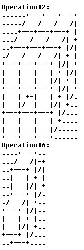

HDU3984. Harry Potter and the Cyber Stone
内存限制：2000/1000 MS (Java/Others) 时间限制：65536/65536 K (Java/Others)
题目描述
After Voldemort and the Death Eater were wiped out by Harry Potter and his friends, Harry becomes the glory of the Wizarding World, magician treat him as model, hero, king… and much more than that.
Recently Harry Potter and his friends have been researching a kind of toy from the Muggle World, with the name Cyber Stone, wondering if after manipulated in some certain way, it can be useful and powerful for magicians. Dating back to the time of chaos, the prototype of Cyber Stone and all possible operations were recorded in an amazing way in an ancient book in now a secret library in Hogwarts. The authors of the records may be elements or spirits, however, without any convincingly evidence. Though the beginning that the products’ becoming fashionable in the Muggle World is only after the Industrial Revolution.
The Cyber Stone can be described with a cube sized NxNxN. Each of the unit cubes can be visible or invisible, and is initially visible.
We know a normal cube has 6 surfaces, and can be pictured in a 3D Cartesian Coordinate System (aka an XYZ coordinate system). For convention, we name every unit cube its 3D axis (x, y, z) (0<=x,y,z<n). And every time we call the surface “the front surface”, if it parallels with YOZ plane and has non-zero X axis. And the surface with the name “the back surface” is the surface parallel to the front surface. And if we are going to describe a rectangle in one of the 6 surfaces, because all points in the same surface have one axis in common, we only give the other two axis of one point ordering by (x,y) (y,z) or (z,x)
For example, if we have a Cyber Stone sized NxNxN, we describe a rectangle of (N-1, 1, 3) – (N-1, 2, 4) as (1,3)-(2,4) in “front surface”.
The surfaces we will mention are only the front and the back surface.
The axis and directions in rotating we will use are one of the six symbols: x+, x-, y+, y-, z+, z-. The symbol “y+” makes a sense of the axis of rotating is the Y-axis and we rotate counterclockwise.

Every time Harry could do one of following operations with a few effort of his magic (of course Muggles can and can only use computers to play like playing an virtual game):
1. Rotate in one of all 6 directions. This operation is called “Rotate”.(The direction symbol can be x+, x-, y+, y-, z+, z-, )
2. Choose a rectangle (a,b)-(c,d), then make all visible unit cube, between (a, b)-(c,d) in the front surface and in the back surface(inclusive), invisible. This operation is called “Remove”
3. Choose a rectangle (a,b)-(c,d), then make all invisible unit cube, between (a, b)-(c,d) in the front surface and in the back surface(inclusive), visible. This operation is called “Resume”
4. Choose a rectangle (a,b)-(c,d), then make all unit cube, between (a, b)-(c,d) in the front surface and in the back surface(inclusive), change its visible state(i.e if it is visible then it’s changed to invisible and the other way around) . This operation is called “Reverse”
In order to describe the result Harry gets, we have:
5. Draw a picture with the aspect of standing in the front and seeing through the front surface to the back. This operation is called "Review”.
Given a group of operation records, your task is write a program to recall the experiment process.
Recently Harry Potter and his friends have been researching a kind of toy from the Muggle World, with the name Cyber Stone, wondering if after manipulated in some certain way, it can be useful and powerful for magicians. Dating back to the time of chaos, the prototype of Cyber Stone and all possible operations were recorded in an amazing way in an ancient book in now a secret library in Hogwarts. The authors of the records may be elements or spirits, however, without any convincingly evidence. Though the beginning that the products’ becoming fashionable in the Muggle World is only after the Industrial Revolution.
The Cyber Stone can be described with a cube sized NxNxN. Each of the unit cubes can be visible or invisible, and is initially visible.
We know a normal cube has 6 surfaces, and can be pictured in a 3D Cartesian Coordinate System (aka an XYZ coordinate system). For convention, we name every unit cube its 3D axis (x, y, z) (0<=x,y,z<n). And every time we call the surface “the front surface”, if it parallels with YOZ plane and has non-zero X axis. And the surface with the name “the back surface” is the surface parallel to the front surface. And if we are going to describe a rectangle in one of the 6 surfaces, because all points in the same surface have one axis in common, we only give the other two axis of one point ordering by (x,y) (y,z) or (z,x)
For example, if we have a Cyber Stone sized NxNxN, we describe a rectangle of (N-1, 1, 3) – (N-1, 2, 4) as (1,3)-(2,4) in “front surface”.
The surfaces we will mention are only the front and the back surface.
The axis and directions in rotating we will use are one of the six symbols: x+, x-, y+, y-, z+, z-. The symbol “y+” makes a sense of the axis of rotating is the Y-axis and we rotate counterclockwise.
Every time Harry could do one of following operations with a few effort of his magic (of course Muggles can and can only use computers to play like playing an virtual game):
1. Rotate in one of all 6 directions. This operation is called “Rotate”.(The direction symbol can be x+, x-, y+, y-, z+, z-, )
2. Choose a rectangle (a,b)-(c,d), then make all visible unit cube, between (a, b)-(c,d) in the front surface and in the back surface(inclusive), invisible. This operation is called “Remove”
3. Choose a rectangle (a,b)-(c,d), then make all invisible unit cube, between (a, b)-(c,d) in the front surface and in the back surface(inclusive), visible. This operation is called “Resume”
4. Choose a rectangle (a,b)-(c,d), then make all unit cube, between (a, b)-(c,d) in the front surface and in the back surface(inclusive), change its visible state(i.e if it is visible then it’s changed to invisible and the other way around) . This operation is called “Reverse”
In order to describe the result Harry gets, we have:
5. Draw a picture with the aspect of standing in the front and seeing through the front surface to the back. This operation is called "Review”.
Given a group of operation records, your task is write a program to recall the experiment process.
输入格式
The first line contains two integers N, M.
N is the length of every edge of the Cyber Stone.
M is the number of operations to simulate.
Then M lines follow, each line can one of following:
Rotate dir
Remove (a,b)-(c,d)
Resume (a,b)-(c,d)
Reverse (a,b)-(c,d)
Review
Technical Specification
1. 1 <= N <= 100
2. 1 <= M <= 1000
3. ‘dir’ in Rotate operation and ‘(a,b)-(c,d)’ in all relative operations are guaranteed legal.
N is the length of every edge of the Cyber Stone.
M is the number of operations to simulate.
Then M lines follow, each line can one of following:
Rotate dir
Remove (a,b)-(c,d)
Resume (a,b)-(c,d)
Reverse (a,b)-(c,d)
Review
Technical Specification
1. 1 <= N <= 100
2. 1 <= M <= 1000
3. ‘dir’ in Rotate operation and ‘(a,b)-(c,d)’ in all relative operations are guaranteed legal.
输出格式
For every line of “Review” operation, output a line of “Operation#<number>:”, where <number> is the operation number of the Review operation.
then output current NxNxN Cyber Stone, following the format:
Each visible cube is represented like(the numbers are for clarity):

Every line of each Review output should contain minimum number of line, and minimum number of columns, and every line has the same length. Use ‘.’ (dot sign, ASCII code 46) to represent the background.
If no cube to be output, output nothing except for the Operation Number.
then output current NxNxN Cyber Stone, following the format:
Each visible cube is represented like(the numbers are for clarity):
Every line of each Review output should contain minimum number of line, and minimum number of columns, and every line has the same length. Use ‘.’ (dot sign, ASCII code 46) to represent the background.
If no cube to be output, output nothing except for the Operation Number.
样例
样例输入
3 6
Remove (1,1)-(1,1)
Review
Rotate y+
Remove (1,1)-(1,1)
Reverse (0,0)-(2,2)
Review样例输出
